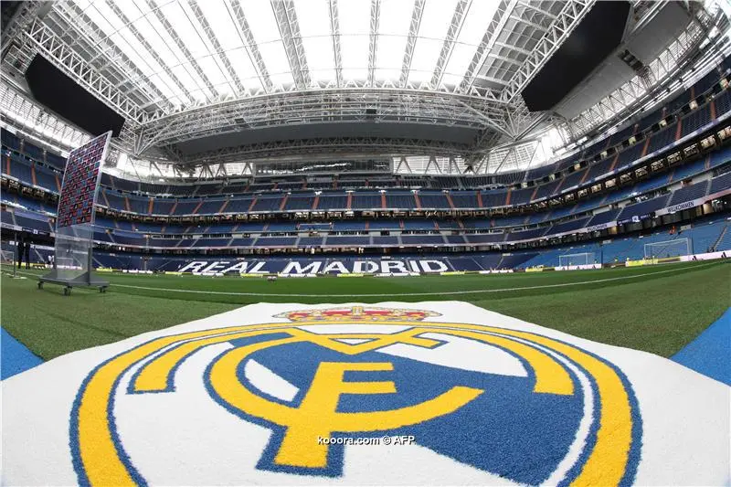
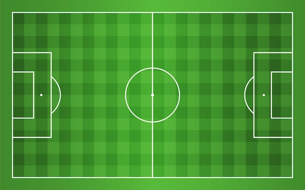
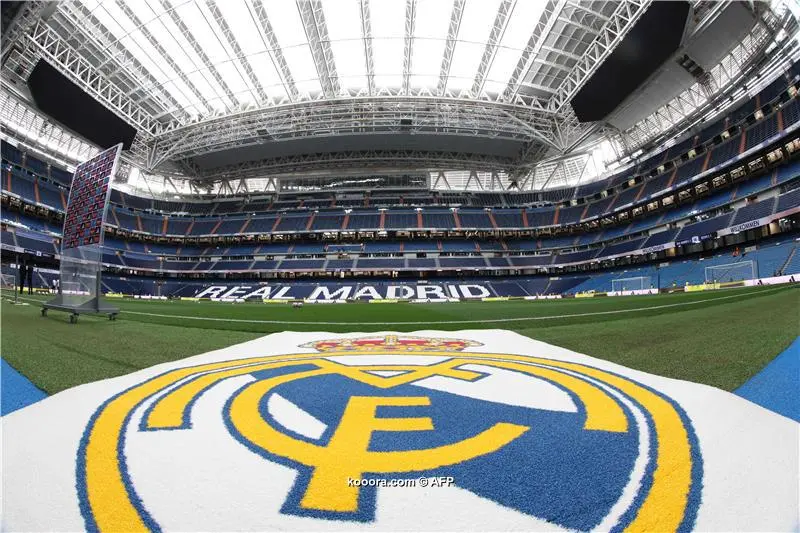
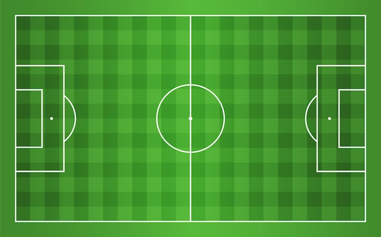
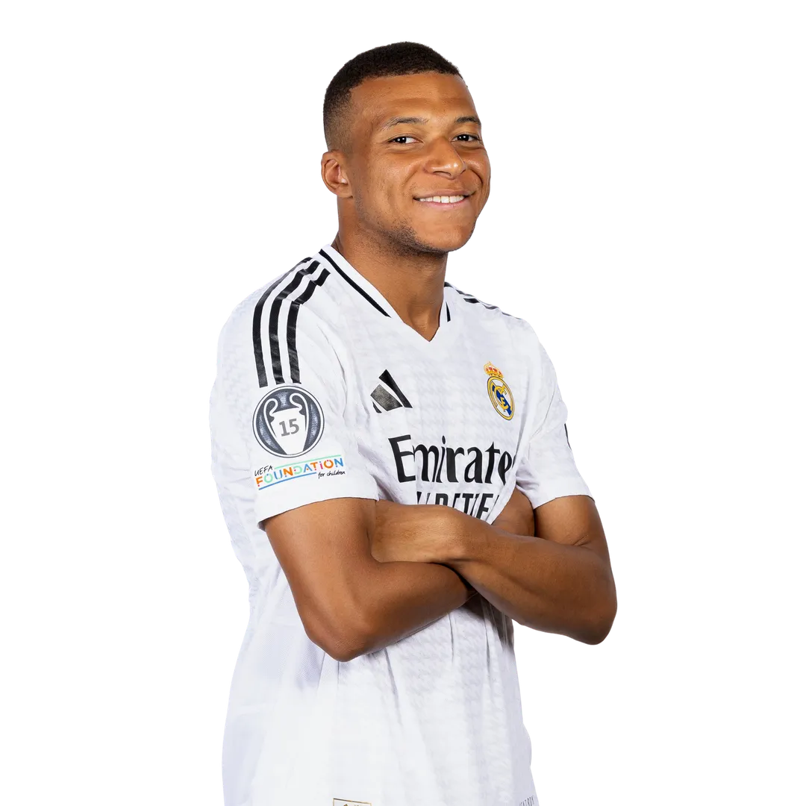
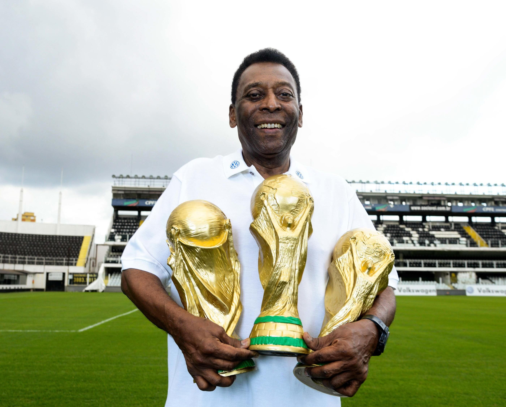
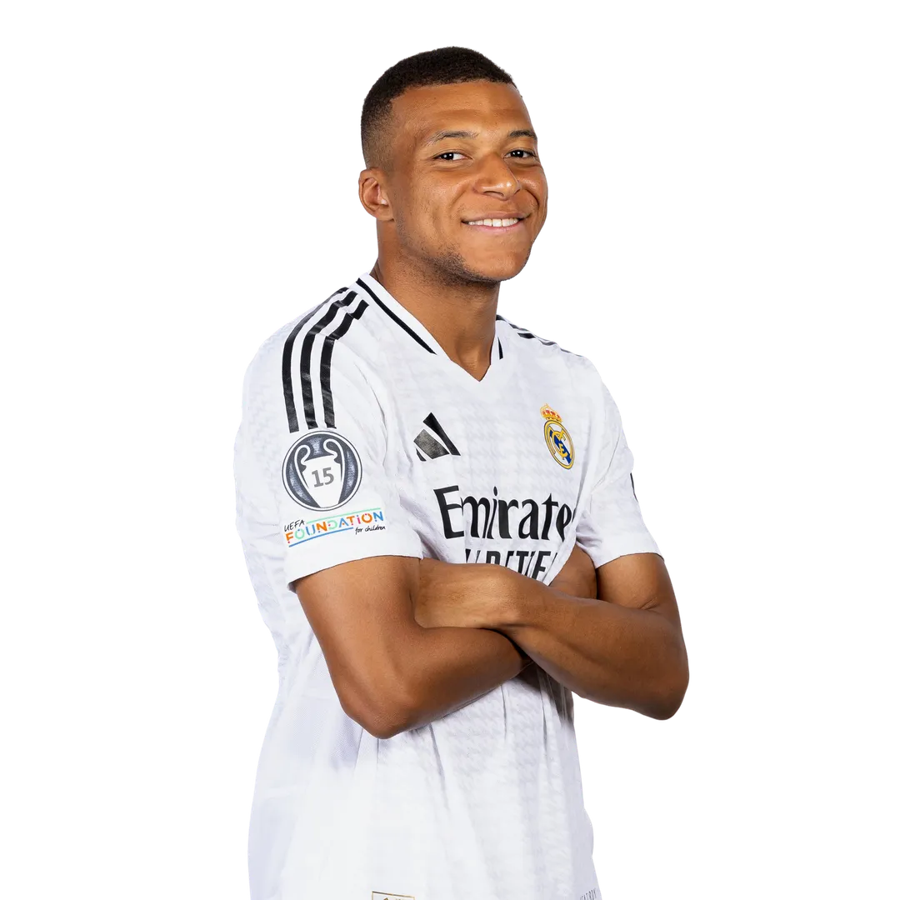
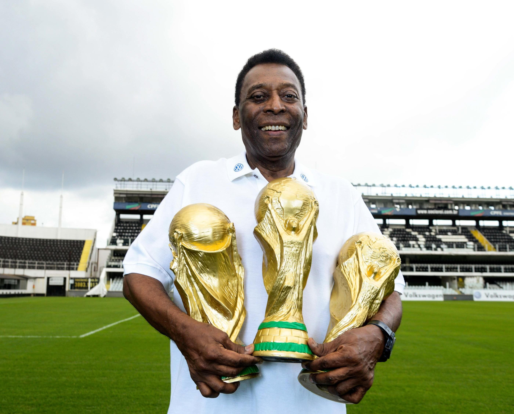

Basic Rules and Objective:
In football, the primary objective is to score more goals than the opposing team by getting the ball into their net. The game is played between two teams, each consisting of 11 players, including a goalkeeper. The match takes place on a rectangular field, typically ranging from 100 to 110 meters in length and 64 to 75 meters in width, with goals located at either end. A standard match lasts 90 minutes, divided into two 45-minute halves, with additional time (known as injury time) added at the end of each half to account for delays. The ball used in the game is spherical, typically made of leather or synthetic materials, designed for easy handling and movement during play.
 



Key Positions and Roles:
- Goalkeeper: Protects the goal and is the only player allowed to use their hands within the penaltyarea.
- Defenders: Players who focus on stopping the opposing team from scoring, often positioned near theirown goal.
- Midfielders: Serve as a link between the defense and attack, controlling the ball and dictating play. They can be defensive or offensive.
- Forwards (Strikers): Players who focus on scoring goals. They are positioned closer to the opponent's goal.

Famous Players:
- Cristiano Ronaldo (Portugal) – Known for his athleticism and incredible goal-scoring abilities.
- Kylian Mbappé (France) – One of the rising stars with great speed and technique.
- Pelé (Brazil) – Often considered one of the greatest of all time.
- Diego Maradona (Argentina) – Known for his skill and the "Hand of God" goal.
 



FIFA World Cup
The **FIFA World Cup** is the most prestigious football tournament, contested by national teams from all over the world every four years. Brazil is the most successful nation in the tournament's history, with a record five titles. Germany and Italy are tied for second, each having won the World Cup four times. These nations have become synonymous with football excellence and have set the standard for success on the global stage.